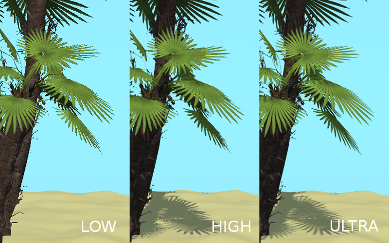

Разработчикам приложений¶
Управление проектами¶
Начиная с версии 15.09, SDK включает систему управления проектами, которая позволяет:
- просматривать список и внутреннюю структуру имеющихся проектов;
- запускать приложения, просматривать сцены в программе-просмотрщике, загружать исходные файлы сцен в Blender;
- создавать и конфигурировать новые приложения, в том числе на основе готовых шаблонов;
- осуществлять сборку приложения и его конверсию в форму, удобную для последующего размещения на сервере;
- конвертировать ресурсы приложения (текстуры, звуковые и видео-файлы) в альтернативные форматы для обеспечения кроссбраузерности и кроссплатформенности;
- автоматизировать повторный экспорт всех сцен из состава приложения, включая файлы в формате JSON и HTML.
- удалять проекты.
Управлять проектами возможно двумя способами: с помощью консольной утилиты project.py, имеющей простой формат вызова и подробную справку, либо в графической форме с помощью веб-приложения, выполняющегося на локальном сервере разработчика. Сервер не требует каких-либо дополнительных настроек и запускается автоматически при старте Blender. Главная страница приложения Project Manager открывается с помощью кнопки Project Manager в Blender.
Project Manager¶
Данное графическое приложение позволяет осуществлять базовые функции управления проектами, такие как просмотр, компиляция, экспорт сцен и конвертация ресурсов. Разработчикам, которым требуется полный набор функций для управления проектами, следует использовать скрипт project.py и ручное редактирование конфигурационных файлов .b4w_project.
Приложение Project Manager доступно из раздела Tools главной страницы SDK. При запуске приложение выводит список из всех проектов, находящихся в установленном SDK.
Команды для управления проектами находятся в верхней части страницы, для создания нового проекта необходимо нажать на ссылку [Create New Project]; для загрузки внешнего проекта - [Import Project Archive]; чтобы скрыть или показать проекты, изначально входящие в состав SDK - [Hide/Show Stock Projects].

Команды управления конкретным проектом находятся справа от него

- Компиляция проекта (недоступно для типов проекта WebPlayer JSON и WebPlayer HTML).
- Реэкспорт блендеровских сцен в проекте.
- Конвертация медиа ресурсов.
- Экспортирование и дальнейшая загрузка проекта.
- Удаление проекта со всеми зависимостями.
Note
Все пути берутся из конфигурационного файла .b4w_project.
Мастер создания проектов¶
Мастер создания новых проектов входит в состав приложения Project Manager и вызывается по ссылке [Create New Project] на главной странице этого приложения.

Имя проекта. Текущим именем будут названы директории в “apps_dev/имя_проекта”, “deploy/assets/имя_проекта”, blender и “deploy/apps/имя_проекта”. Для лучшей совместимости рекомендуется использовать буквы и нижнее подчеркивание.
Название проекта. Это имя будет показываться в заголовке веб-браузера.
Имя автора проекта.
Добавить шаблоны приложения. В директорию проекта “apps_dev/имя_проекта” будут добавлены стандартные шаблоны приложения: html-файл, css-файл, js-файл.
Добавить шаблоны сцены. В директорию “deploy/assets/имя_проекта” будет добавлен стандартный json-файл; в директорию “blender/имя_проекта” - blend-файл.
Скопировать скрипт менеджера проектов. Скрипт project.py будет скопирован в директорию проекта.
Все файлы проекта будут находиться в одной директории. Предпочтительно использовать для маленьких проектов, таких как уроки и примеры. Для данной опции доступен только тип проекта - “update”.
Тип собираемого проекта. Здесь возможны варианты:
- “External” - движок берется из директории “deploy/apps/common/”. Компилируются только файлы приложения;
- “Copy” - движок копируется в директорию собранного приложения. Компилируются только файлы приложения;
- “Compile” - исходники движка компилируются вместе со скриптами приложения;
- “Update” - заменется движок в директории проекта;
- “Webplayer JSON” - json-файл, находящийся в проекте, запускается при помощи веб-плеера в составе SDK;
- “Webplayer HTML” - проект состоит из html-файла, внутри которого находятся все необходимые ресурсы.
Уровень оптимизации javascript.
- “Simple” - в коде заменяются имена переменных;
- “Advanced” - призводится оптимизация кода.
- “Whitespace Only” - в коде удаляются только пробелы;
Расширенное управление проектами¶
Расширенное управление проектами используется опытными разработчикам, которым необходима как большая степень гибкости, так и возвожность втоматизировать все рабочие процессы, связанные с разработкой приложений.
Для расширенного управления проектами следует использовать скрипт project.py и ручное редактирование конфигурационных файлов .b4w_project.
Зависимости¶
Система управления проектами работает на всех операционных системах, однако для некоторых операций может потребоваться установка дополнительных зависимостей. Проверить, установлены ли необходимые зависимости, можно с помощью команды:
./project.py check_deps
Для пользователей ОС Windows:
python project.py check_deps
Структура проекта¶
Типовое приложение, разрабатываемая с помощью системы управления проектами имеет вид:
blend4web/
apps_dev/
myproject/
project.py
.b4w_project
myproject.js
myproject.css
myproject_dev.html
blender/
myproject/
myproject.blend
deploy/
apps/
my_project/
myproject.js
myproject.css
myproject.html
assets/
myproject/
myproject.json
myproject.bin
Как видно, это приложение состоит из 4 различных директорий:
- apps_dev/myproject. Содержит исходные файлы приложений проекта.
- blender/myproject. Содержит исходные файлы сцен проекта.
- deploy/assets/myproject. Содержит экспортированные файлы сцен проекта.
- deploy/apps/myproject. Содержит экспортированные файлы сцен проекта.
Кроме того, операция развёртывания (deploy) может создавать ещё одну директорию, однако она обычно располагается за пределами SDK и её название и расположение зависит от структуры директорий на конечном сервере.
Конфигурационный файл .b4w_project¶
Если при запуске скрипта project.py не были заданы параметры проекта, то они берутся из конфигурационного файла.
[info]
author =
name =
title =
[paths]
assets_dirs =
blend_dirs =
blender_exec =
build_dir =
deploy_dir =
[compile]
apps =
css_ignore =
engine_type = external
js_ignore =
optimization = simple
use_physics =
use_smaa_textures =
version =
[deploy]
assets_path_prefix =
remove_exist_ext_dir =
Низкоуровневое создание проекта¶
./project.py init myproject
Команда создает проект с указанной именем в текущей директории. По умолчанию в директории проекта будет находиться только конфигурационный файл.
Доступные опции:
-A | --copy-app-templates(необязательная) создает в директории проекта стандартные шаблоны приложения (<имя проекта>_dev.html, <имя проекта>.js, <имя проекта>.css).-B | --bundle(необязательная) все файлы проекта будут размещены в одной директории.-C | --author(необязательная) записывает в конфигурационный файл имя автора или компании.-o | --optimization(необязательная) записывает в конфигурационный файл тип оптимизации скриптов.-P | --copy-project-script(необязательная) создает скрипт project.py в директории проекта.-S | --copy-scene-templates(необязательная) создает в директорияхdeploy/assets/<имя проекта>иblender/<имя проекта>(необязательная) стандартные шаблоны сцены (<имя проекта>.json/.bin и <имя проекта>.blend соответственно).-T | --title"(необязательная) записывает в конфигурационный файл заголовок проекта. При сборке он будет добавлен в html-тэг<title>.-t | --engine-type(необязательная) записывает в конфигурационный файл тип собираемого приложения.
Пример:
./project.py init -AS -C Blend4Web -o simple -T MyProject -t external myproject
Данная команда создаст директорию myproject, в которой будут находиться файлы: myproject.js, myproject.css, myproject_dev.html и .b4w_project.
Файл .b4w_project будет выглядеть следущим образом:
[info]
author = Blend4Web
name = myproject
title = MyProject
[paths]
assets_dirs = deploy/assets/myproject;
blend_dirs = blender/myproject;
blender_exec = blender
build_dir = deploy/apps/myproject
deploy_dir =
[compile]
apps =
css_ignore =
engine_type = external
js_ignore =
optimization = simple
use_physics =
use_smaa_textures =
version =
[deploy]
assets_path_prefix =
remove_exist_ext_dir =
Разработка нескольких приложений в составе проекта¶
В проекте может содержаться несколько приложений. Для этого необходимо в конфигурационном файле указать соответствующие HTML-файлы через точку с запятой:
...
[compile]
apps = myapp1;myapp2;
...
Сборка проекта¶
python3 project.py -p myproject compile
Собирает проект в директории deploy/apps/myproject.
Note
Для работы скрипта необходимо установить java и записать ее в переменную среды PATH
Доступные опции:
"-a | --app"(необязательная) указывает на HTML-файл, относительно которого будет собираться приложение для проекта."-c | --css-ignore"(необязательная) добавляет в исключения стили, которые не будут скомпилированы."-j | --js-ignore"(необязательная) добавляет в исключения скрипты, которые не будут скомпилированы."-o | --optimization"(необязательная) используется для указания метода оптимизации js-файлов. Доступные варианты:whitespace,simple(по умолчанию) иadvanced."-t | --engine-type"(необязательная) определяет тип компилируемого приложения. Доступны четыре варианта: external (по умолчанию), copy, compile, update."-v | --version"добавляет версию к адресам скриптов и стилей.
Требования, накладываемые компилятором:
- В корне директории должен находится единственный html-файл, если не указана опция
-a. - Скрипты и стили могут находиться как в корне проекта (приложения), так и во вложенных папках.
Автоматический экспорт ресурсов¶
python3 project.py -p myproject reexport
Повторно экспортирует blend-файлы в форматах JSON и HTML.
Доступные опции:
"-b | --blender_exec"путь к исполняемому файлу blender."-s | --assets"определяет директорию с ресурсами сцены.
Конвертация ресурсов¶
python3 project.py -p myproject convert_resources
Конвертирует внешние ресурсы (текстуры, звуковые и видео-файлы) проекта в альтернативные форматы для обеспечения кроссбраузерности и кроссплатформенности.
Доступные опции:
"-s | --assets"определяет директорию с ресурсами сцены.
Более подробно о процессе конвертации ресурсов сказано в соответствующем разделе.
Развертывание проекта¶
python3 project.py -p myproject deploy
Сохраняет проект во внешнюю директорию со всеми необходимыми зависимостями.
Доступные опции:
"-d | --dir"директория для развертывания проекта."-e | --assets-path"путь к файлам ресурсов."-o | --override"(необязательная) удаляет директорию, если она существует."-s | --assets"определяет директорию с ресурсами сцены."-t | --engine-type"(необязательная) определяет тип развертываемого приложения.
Удаление проекта¶
python3 project.py -p myproject remove
Удаляет проект. Удаляемые директории берутся из конфигурационного файла.
Обновление приложений на новые версии SDK¶
В процессе обновления на новые версии движка чаще всего возникает две проблемы:
- Несоответствие модулей новой и старой версии движка.
- Несоответствие старых и новых API движка.
Для того, чтобы обновить список модулей, подключаемых в необфусцированной версии приложений, необходимо перейти в директорию с исходными файлами приложений apps_dev/my_project. Затем необходимо вызвать скрипт, генерирующий пути к файлам движка:
python3 ../../scripts/mod_list.py
Для пользователей ОС Windows:
python ..\..\scripts\mod_list.py
Note
Стоит отдельно отметить, что для запуска скриптов требуется интерпретатор языка Python версии 3.x
В консоли появится список модулей, которые необходимо скопировать и вставить в главный HTML-файл:
<head>
<meta charset="UTF-8">
<meta name="viewport" content="width=device-width, initial-scale=1, maximum-scale=1">
<script type="text/javascript" src="../../src/b4w.js"></script>
<script type="text/javascript" src="../../src/anchors.js"></script>
<script type="text/javascript" src="../../src/animation.js"></script>
<script type="text/javascript" src="../../src/assets.js"></script>
<script type="text/javascript" src="../../src/batch.js"></script>
<script type="text/javascript" src="../../src/boundings.js"></script>
<script type="text/javascript" src="../../src/camera.js"></script>
. . .
</head>
Несоответствие API решается рефакторингом кода приложения. Все изменения подробно описываются в замечаниях к релизам.
Пути к загружаемым ресурсам приложения¶
При загрузке .json-файлов необходимо использовать функцию get_std_assets_path() из модуля config.js:
m_data.load(m_config.get_std_assets_path() + "example/example.json", load_cb);
После сборки готового приложения путь к данным изменится, а использование функции get_std_assets_path() позволит избежать возникновения проблемы с неверным путем.
Написание логики приложений¶
Приложение Hello world!¶
Простейшее приложение на основе Blend4Web может иметь вид:
<!DOCTYPE html>
<html>
<head>
<script src="b4w.min.js"></script>
<script>
function hello() {
var m_version = b4w.require("version");
document.body.innerHTML = "Hello, Blend4Web " + m_version.version() + "!";
}
</script>
</head>
<body onload="hello()"></body>
</html>
Приложение выводит сообщение и текущую версию движка в окне браузера. Рассмотрим представленный пример. Базовый код движка подключается с помощью тега <script src="...">. Далее, приложение ожидает окончания загрузки страницы и выводит сообщение в окне браузера. В данном примере используется единственный модуль version, в котором находится одноимённая функция version(). Подробную информацию о предназначении модулей и функций движка можно найти в документации по API.
Файл b4w.min.js со скомпилированным кодом движка необходимо скопировать из директории SDK deploy/apps/common и разместить в той же директории, что и представленный HTML-файл.
Загрузка сцены в приложение¶
Для того, чтобы загрузить трёхмерную сцену, требуется выполнить следующую последовательность действий:
- Разместить на странице элемент
<canvas>, на котором будет производиться рендеринг. - После загрузки страницы, для инициализации контекста WebGL, вызвать функцию
m_main.init()с идентификатором созданного элемента. - Вызвать функцию
m_data.load()для загрузки трёхмерной сцены.
<!DOCTYPE html>
<html>
<head>
<script src="b4w.min.js"></script>
<script>
function hello() {
var m_main = b4w.require("main");
var m_data = b4w.require("data");
var canvas_elem = document.getElementById("canvas_id");
m_main.init(canvas_elem);
m_data.load("some_scene.json");
}
</script>
</head>
<body onload="hello()"><canvas id="canvas_id"></canvas></body>
</html>
Note
Следует отметить, что реальное приложение должно включать в себя проверку ошибок, настройку движка перед инициализацией, а также базовую систему взаимодействия с пользователем.
Система модулей¶
Несмотря на то, что движок предоставляет прикладному программисту API в объёме
десятков модулей, в процессе работы он занимает в глобальном пространстве имён
единственный объект b4w. При необходимости обращения к модулю, последний
импортируется с помощью вызова функции b4w.require().
Допустима регистрация сторонних модулей, если их имена не пересекаются с
имеющимися. Регистрация происходит посредством вызова b4w.register().
Проверка наличия модуля с некоторым именем может быть осуществлена с помощью
b4w.module_check().
Пример:
// check if module exists
if (b4w.module_check("my_module"))
throw "Failed to register module: my_module";
// register my_module
b4w.register("my_module", function(exports, require) {
// import module "version"
var m_version = require("version");
// export print_build_date() from module "my_module"
exports.print_build_date = function() {
// exec function date() from module "version"
console.log("Engine build date: " + m_version.date());
}
});
// import module "my_module"
var m_my_module = b4w.require("my_module");
// exec function print_build_date() from module "my_module"
m_my_module.print_build_date();
Быстрое создание приложений¶
Поскольку создание приложения с нуля может быть достаточно сложной операцей, особенно для начинающих пользователей, в движке существует специальное дополнение app:
<!DOCTYPE html>
<html>
<head>
<script src="b4w.min.js"></script>
<script>
var m_app = b4w.require("app");
var m_data = b4w.require("data");
m_app.init({
canvas_container_id: "container_id",
callback: load_cb
})
function load_cb() {
m_data.load("some_scene.json", loaded_cb);
}
function loaded_cb() {
m_app.enable_controls();
m_app.enable_camera_controls();
}
</script>
</head>
<body>
<div id="container_id" style="width: 350px; height: 200px;"></div>
</body>
</html>
В данном случае модуль app создаст элемент <canvas> внутри контейнера с
указанным идентификатором container_id, осуществит инициализацию движка при
загрузке страницы и сообщит о её окончании с помощью обработчика load_cb().
Далее загружается сцена some_scene.json, аналогично предыдущему примеру, с тем лишь отличием, что по окончании загрузки этой сцены инициализируется подсистема управления и активируются средства для перемещения камеры с помощью клавиатуры и мыши (сенсорного экрана для мобильных устройств).
При использовании модуля app необходимо явно задавать размеры контейнерного элемента, поскольку в противном случае создаваемый элемент <canvas> будет иметь нулевые размеры.
Конвертация ресурсов¶
Существующие браузеры не полностью поддерживают основные форматы медиаданных, поэтому для создания кроссбраузерных приложений, а также с целью оптимизации, необходимо использовать конвертер ресурсов.
В состав дистрибутива включен Python скрипт (scripts/converter.py) для конвертации исходных файлов в другие форматы с целью расширения спектра поддерживаемых платформ, а также для уменьшения размера ресурсов.
Данный скрипт может вызываться автоматически, используя систему управления проектами, либо вручную:
> python3 <path_to_sdk>/scripts/converter.py [-d file_path] resize_textures | convert_dds | convert_media
Для пользователей ОС Windows:
cd <path_to_sdk>\scripts
python converter.py [-d file_path] resize_textures | convert_dds | convert_media
Note
Стоит отдельно отметить, что для запуска скриптов требуется интерпретатор языка Python версии 3.x
С помощью опции -d можно указать путь к директории, в которой будет производится конвертация.
При необходимости исключить некоторую директорию при конвертации, достаточно
разместить в ней файл с именем .b4w_no_conv. На конвертацию во вложенных
директориях это не повлияет.
Аргумент resize_textures используется для изменения размера текстур в режиме LOW.
Зависимости¶
Убедитесь, что у вас установлены все необходимые для конвертации программы. Это можно сделать следующей командой:
> python3 <path_to_sdk>/scripts/converter.py check_dependencies
Если какая-либо программа отсутствует, то будет выведено сообщения вида:
Couldn’t find PROGRAM_NAME.
Linux
Список необходимых программ можно посмотреть в таблице:
| Название | Пакет в дистрибутиве Ubuntu 15.04 |
|---|---|
| ImageMagick | imagemagick |
| NVIDIA Texture Tools | libnvtt-bin |
| Libav | libav-tools |
| FFmpeg | ffmpeg |
Note
Пользователи Linux могут дополнительно установить пакет qt-faststart, служащий для оптимизации загрузки медиаданных.
Windows
Для пользователей ОС Windows нет необходимости устанавливать эти пакеты, так как они уже находятся в составе SDK.
Mac OS
Пользователи Mac OS могут установить менеджер пакетов brew, а затем с его помощью установить некоторые недостающие пакеты.
Перед началом установки пакетов произведите установку библиотек libpng и libjpeg, выполнив следующие команды в консоле:
> brew install libpng
> brew install libjpeg
Теперь можно приступать к установке необходимых зависимостей:
> brew install imagemagick
> brew install --with-theora --with-libvpx --with-fdk-aac ffmpeg
Для установки NVIDIA Texture Tools необходимо склонировать репозиторий, выполнив следующую команду:
> git clone https://github.com/TriumphLLC/NvidiaTextureTools.git
Теперь можно произвести сборку и установку пакета:
> cd NvidiaTextureTools
> ./configure
> make
> make install
Формат данных¶
Преобразование происходит по схеме:
- для аудио (convert_media):
- ogg -> mp4
- mp3 -> ogg
- mp4 -> ogg
Рекомендуется использовать в качестве базового формата ogg, в этом случае для обеспечения кросс-браузерной совместимости потребуется только преобразование из ogg в mp4. Пример файла на входе: file_name.ogg, пример файла на выходе: file_name.altconv.mp4.
- для видео (convert_media):
- webm -> m4v
- m4v -> webm
- ogv -> webm
- webm -> seq
- m4v -> seq
- ogv -> seq
Рекомендуется использовать в качестве базового формата WebM, в этом случае для обеспечения кросс-браузерной совместимости потребуется только преобразование из webm в m4v (из webm в seq для iPhone). Пример файла на входе: file_name.webm, пример файла на выходе: file_name.altconv.m4v.
- для изображений (convert_dds):
- png -> dds
- jpg -> dds
Пример файла на входе: file_name.jpg, пример файла на выходе: file_name.jpg.dds.
В целях оптимизации работы приложения существует возможность использования min50 (уменьшенных вдвое) и DDS текстур.
Для этого при инициализации приложения необходимо передать следующие параметры:
exports.init = function() {
m_app.init({
// . . .
assets_dds_available: true,
assets_min50_available: true,
// . . .
});
// . . .
}
Файл формата .seq представляет собой раскадрированное видео. Применяется на
IE 11 и iPhone, поскольку на них возникают трудности при использовании видео
стандартного формата в качестве текстуры. Использование dds-формата для
изображений является более оптимальным по сравнению с другими форматами.
Движком могут использоваться файлы, созданные пользователем вручную и имеющие
следующие наименования: file_name.altconv.m4v, file_name.altconv.mp3
и т.д. Такие файлы необходимо размещать в одной директории с медиафайлом,
используемым в Blender’e.
Вы также можете использовать бесплатную кроссплатформенную программу Miro Video Converter для конвертации медиаданных.
Примеры кода¶
В составе SDK присутствует приложение Code Snippets, демонстрирующее примеры использования функционала движка.
На данный момент приложение включает в себя следующие примеры:
- Bone API - пример управления положением отдельных костей скелета
- Camera Animation - создание процедурной анимации камеры
- Camera Move Styles - переключение режимов управления камерой
- Canvas Texture - пример работы с canvas-текстурой
- Custom Anchors - процедурное создание аннотаций
- Dynamic Geometry - процедурное изменение геометрии
- Gyro (Mobile Only) - пример работы с гироскопом мобильных устройств
- Instancing - копирование объектов сцены
- Material API - изменение свойств материалов и замена материалов объекта
- Morphing - использование ключей деформации объекта
- Ray Test - использование функционала испускания лучей для определения препятствий
Приложение Code Snippets доступно по пути SDK/apps_dev/code_snippets/code_snippets_dev.html. Также оно доступно по ссылке из файла index.html в корне SDK.
Событийная модель¶
Событийная модель предоставляет унифицированный интерфейс для описания изменения состояний 3D сцены, упрощая обработку событий физики и действий пользователя.
Сенсоры¶
Основным блоком событийной модели является сенсор (sensor). Сенсор является программной сущностью, которая выдаёт на выходе единственное числовое значение, в большинстве случаев это либо 1 (единица), либо 0 (ноль). Некоторые сенсоры также несут полезную нагрузку (payload), которую можно получить в фунции-обработчике множества с помощью соответствующего API. Например, сенсор трассировки лучей (Ray Sensor) предоставляет относительную длину луча пересечения.
Опрос значений сенсоров не доступен пользователю в виде API. Вместо этого, каждый сенсор должен присутствовать в одном или нескольких множествах (sensor manifold). Множество является логическим контейнером, ассоциированным с объектом на сцене. Оно генерирует ответ на определенный набор событий сенсоров в виде вызова функции-обработчика. Для определения множества необходимо иметь следующую информацию (см. также описание функции create_sensor_manifold в документации по API):
- Объект-носитель множества (например, бросаемый объект).
- Уникальный идентификатор множества (например, “IMPACT”).
- Тип вызова функции-обработчика (варианты:
CT_POSITIVE- положительный результат логической функции,CT_CONTINUOUS- каждый кадр при положительном результате логической функции и один раз при нулевом,CT_LEVEL- любое изменение значения результата логической функции,CT_SHOT- одномоментный скачок результата логической функции,CT_TRIGGER- переключение результата логической функции,CT_CHANGE- любое изменение любого из сенсоров). - Массив сенсоров.
- Логическая функция, определяющая при какой комбинации состояний сенсоров вызывается функция-обработчик.
- Функция-обработчик.
- Необязательный параметр, который может быть передан в функцию-обработчик.
Более подробно об API, используемых в событийной модели движка, описано в документации модуля controls.
Пример¶
Поставлена задача озвучить удар бросаемого камня так, чтобы при ударе о различные среды (например, земля и стена) выводился характерный звук. На сцене в Blender’е имеются ограничивающие меши с физическими материалами, их идентификаторы “TERRAIN” и “WALL”. На сцене также присутствует бросаемый физический объект с названием “Stone”.
Определим по одному сенсору соударения (Collision Sensor) для каждой среды, по типу издаваемого звука.
// import the modules
var m_scenes = b4w.require("scenes");
var m_controls = b4w.require("controls");
// get the object being thrown
var stone = m_scenes.get_object_by_name("Stone");
// create the sensors
var sensor_impact_terrain = m_controls.create_collision_sensor(stone, "TERRAIN");
var sensor_impact_wall = m_controls.create_collision_sensor(stone, "WALL");
Добавим сенсоры в массив. В качестве логической функции используем логическое ИЛИ. В обработчике напишем код для воспроизведения звука. Создадим множество сенсоров с идентификатором “IMPACT” и типом CT_SHOT (одномоментный).
// array of the sensors
var impact_sens_array = [sensor_impact_terrain, sensor_impact_wall];
// manifold logic function
var impact_sens_logic = function(s) {return (s[0] || s[1])};
// callback
var impact_cb = function(obj, manifold_id, pulse) {
// NOTE: it's possible to play both sounds simultaneously
if (m_controls.get_sensor_value(obj, manifold_id, 0) == 1) {
// ...
console.log("play the terrain impact sound");
}
if (m_controls.get_sensor_value(obj, manifold_id, 1) == 1) {
// ...
console.log("play the wall impact sound");
}
}
// create the manifold
m_controls.create_sensor_manifold(stone, "IMPACT", m_ctl.CT_SHOT,
impact_sens_array, impact_sens_logic, impact_cb);
При столкновении объекта “Stone” с любым из физических материалов “TERRAIN” или “WALL” происходит вызов функции-обработчика. Внутри этой функции получим значения обоих сенсоров по их индексу в массиве сенсоров (0 - “TERRAIN”, 1 - “WALL”). Значение сенсора = 1 (активный) означает, что произошло столкновение с соответствующим физическим материалом. В результате воспроизводится соответствующий звук (код не показан).
Файловая структура SDK¶
- apps_dev
исходный код приложений
- code_snippets
исходные файлы приложения для демонстрации примеров использования API Blend4Web
- scripts
- исходные файлы самих примеров использования API Blend4Web
- dairy_plant
- исходные файлы приложения “Молочный завод” (доступно только в SDK Pro)
- fashion
- исходные файлы приложения “Показ мод” (доступно только в SDK Pro)
- firstperson
- исходные файлы приложения “Ферма” (доступно только в SDK Pro)
- flight
- исходные файлы приложения “Остров”
- new_year
- исходные файлы открытки “С новым годом 2015”
- project.py
- скрипт для разработчиков приложений
- victory_day_2015
- исходные файлы открытки “День победы 70”
- viewer
исходные файлы приложения для просмотра сцен Viewer
- assets.json
- метаданные с информацией о сценах, загружаемых просмотрщиком сцен Viewer
- webplayer
- исходные файлы веб-плеера
- website
- исходные файлы приложений, размещаемых на официальном сайте Blend4Web
- blender
- исходные файлы сцен в формате Blender
- blender_scripts
- экспортер и вспомогательные скрипты для Blender’а
- csrc
- исходный код бинарной части экспортера движка и других утилит на языке C
- deploy
директория с ресурсами для размещения на сервере (исходные файлы сцен, скомпилированные приложения и документация)
- api_doc
- документация API движка для разработчиков (собирается автоматически, на основе исходного кода движка)
- apps
3D-приложения, предназначенные для развертывания, директория дублирует apps_dev
- common
- Файлы скомпилированного движка. Используются приложениями из состава SDK (отсюда и название).
- assets
- загружаемые ресурсы: сцены, текстуры, звуковые файлы
- doc
- настоящее руководство пользователя в формате HTML, собирается автоматически из doc_src
- globals_detect
- вспомогательный код для определения глобальных переменных
- tutorials
- исходные файлы обучающих примеров
- doc_src
- исходный код настоящего руководства пользователя на языке разметки reST
- index.html и index_assets
- файлы главной веб-страницы SDK
- license
- файлы с текстами лицензионных соглашений
- Makefile
- файл сборки для компиляции движка, приложений, документации, развертывания на удаленном сервере (недоступен в бесплатной версии)
- README.rst
- файл README
- scripts
скрипты
- blend4web.lst, blend4web_sdk_free.lst и blend4web_sdk_pro.lst (опционально)
- списки файлов для сборки дистрибутивов
- check_resources.py
- скрипт для проверки и сообщения о неиспользуемых ресурсах (изображения и звуки, на которые ссылаются экспотируемые файлы)
- compile_b4w.py
- скрипт для сборки кода движка и приложений
- converter.py
- скрипт, осуществляющий: уменьшение разрешения текстур вдвое, компрессию текстур в формат DDS, конвертацию звуковых файлов в форматы mp4 и ogg
- custom_json_encoder.py
- форк Python-модуля json, сортирует ключи по алфавиту в обратном порядке
- gen_glmatrix.sh
- скрипт для генерации математического модуля на основе исходных файлов из репозитория glMatrix 2
- graph.sh
- генератор текущего графа сцены в формате svg, используется для отладки рендеринга
- make_dist.py
- сборщик дистрибутивов
- memory.sh
- скрипт для проверки обычной (RAM) и видео-памяти (VRAM)
- mod_list.py
- скрипт для генерации списка модулей, используемых в приложениях
- plot.sh
- построитель графиков отладочной информации
- process_blend.py
- скрипт для автоматического переэкспорта всех сцен из состава SDK
- remove_alpha_channel.sh
- скрипт для удаления альфа-канала изображения
- screencast.sh
- скрипт для записи видео с экрана
- shader_analyzer.py
- скрипт, запускающий локальный веб-сервер, который осуществляет подсчет сложности шейдеров
- translator.py
- скрипт для сборки файлов с переводами аддона
- shaders
- GLSL-шейдеры движка
- src
основной исходный код ядра движка
- addons
- исходный код дополнений движка
- ext
- исходный код внешних объявлений, формирующих API движка
- libs
- исходный код библиотек
- tools
Различные инструменты для сборки движка, приложений и конвертации ресурсов
- converter_utils
- сборки утилит для конвертации ресурсов
- closure-compiler
- компилятор Google Closure, файлы исключений к нему, генераторы файлов исключений
- glsl
- compiler
- компилятор GLSL-шейдеров движка
- pegjs
- грамматики парсер-генератора PEG.js для реализации препроцессора GLSL, а также скрипт для генерации модулей парсеров из этих грамматик
- yuicompressor
- утилита для сжатия файлов CSS
- uranium
- исходный код и скрипты сборки физического движка Uranium (форк Bullet)
- VERSION
- содержит текущую версию движка
Загрузка локальных ресурсов¶
Рендерер движка является Web-приложением, и его работа происходит при просмотре HTML-файла в браузере. После инициализации происходит загрузка ресурсов (сцен, текстур), которая подчиняется правилу ограничения домена, запрещающему, в частности, загрузку из локальной директории.
Начиная с версии 15.02, в состав Blend4Web SDK входит сервер разработки, решающий проблему загрузки локальных ресурсов.
Профили качества изображения¶
Для поддержки различных по функциональности платформ в движке реализовано несколько профилей качества изображения:

- низкое качество (
P_LOW) - отключен ряд функций (тени, динамическое отражение, постпроцессинг), размер текстур для сборочной версии уменьшен вдвое, антиалиасинг отключен- высокое качество (
P_HIGH) - используются все запрошенные сценой функции, метод антиалиасинга FXAA- максимальное качество (
P_ULTRA) - вдвое увеличено разрешение рендеринга, увеличено разрешение карт теней, метод антиалиасинга SMAA
{kind=link}
Переключение профилей качества осуществляется программно, до инициализации контекста WebGL. Профиль по умолчанию P_HIGH.
var m_cfg = b4w.require("config");
var m_main = b4w.require("main");
m_cfg.set("quality", m_cfg.P_LOW);
m_main.init(...);
Разработчики приложений могут также установить параметр quality при инициализации движка с использованием дополнения app.js:
var m_cfg = b4w.require("config");
var m_app = b4w.require("app");
m_app.init({
canvas_container_id: "body_id",
quality: m_cfg.P_HIGH
});
Специфика неполноэкранных приложений¶
Элемент Canvas, на котором осуществляется рендеринг, может изменять своё местоположение относительно окна браузера. Это может происходить в результате манипуляций, проводимых над DOM-деревом, либо в результате скроллинга страницы, что особенно актуально для неполноэкранных приложений.
В большинстве случаев это не будет никак сказываться на работе приложения. Однако для событий, связанных с положением курсора мыши или позицией касания на touch-устройстве, возможно получение некорректных результатов. Это происходит, потому что координаты, получаемые из соответствующих событий, принадлежат системе отсчета относительно окна браузера, а движок работает с координатами в системе отсчета именно Canvas элемента (верхний левый угол элемента).
- Если верхний левый угол Canvas’а совпадает с верхним левым углом окна браузера, и его местоположение не будет изменяться, то достаточно использовать координаты event.clientX и event.clientY соответствующего события либо функции API get_coords_x() и get_coords_y():
var m_mouse = require("mouse");
// . . .
var x = event.clientX;
var y = event.clientY;
// . . .
var x = m_mouse.get_coords_x(event);
var y = m_mouse.get_coords_y(event);
// . . .
- Если на странице присутствует только скроллинг окна браузера, то достаточно использовать координаты event.pageX и event.pageY:
// . . .
var x = event.pageX;
var y = event.pageY;
// . . .
- В случае более сложных манипуляций с положением элемента Canvas (скроллинг отдельных элементов страницы, смещение относительно левого верхнего угла окна браузера, манипуляции с DOM-деревом) требуется корректный пересчет координат. Чтобы получить координаты, подходящие для использования в движке, можно провести преобразование при помощи метода client_to_canvas_coords():
var m_cont = require("container");
var _vec2_tmp = new Float32Array(2);
// . . .
var canvas_xy = m_cont.client_to_canvas_coords(event.clientX, event.clientY, _vec2_tmp);
// . . .
Для получения координат в системе отсчета Canvas элемента, движок должен знать его положение относительно окна браузера. Однако, если оно будет меняться во время работы приложения (тот же скроллинг), то необходимо будет как-то пересчитывать позицию Canvas’а. Для того, чтобы это происходило автоматически, нужно выставить настройкуtrack_container_positionпри инициализации приложения:
exports.init = function() {
m_app.init({
// . . .
track_container_position: true,
// . . .
});
// . . .
}
При её использовании в некоторых браузерах (например, Firefox) возможно незначительное снижение производительности вследствие частого обращения к DOM-дереву. Если этот момент критичен, то вместо флагаtrack_container_positionможно пользоваться методами force_offsets_updating(), update_canvas_offsets() или более низкоуровневым set_canvas_offsets() для обновления положения элемента Canvas вручную, когда это действительно необходимо:
var m_cont = require("container");
// . . .
m_cont.force_offsets_updating();
// . . .
m_cont.update_canvas_offsets();
// . . .
m_cont.set_canvas_offsets(offset_left, offset_top);
// . . .
- Возможность масштабирования всей веб-страницы на мобильных устройствах также может приводить к смещению элемента Canvas. Описанные выше решения годятся и для этого случая, однако, в качестве альтернативы можно запретить масштабирование вовсе и избежать подобных проблем. Для этого достаточно в заголовке страницы добавить следующий мета-тег:
<meta name="viewport" content="user-scalable=no">